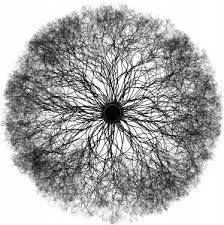
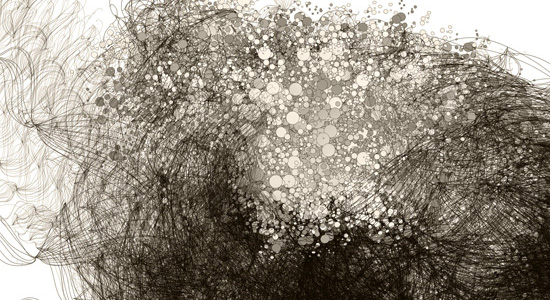

Phillip Gallanter from New York University wrote his dissertation on the ways in which art can evolve from complexity and chaos. A complex system can generate new art in dynamic ways by following a distinct set of predefined rules Although the result may have a random look to it, it is mechanic in it's ability to produce the exact same results so long as the input hasn't changed
Generative art requries artists to encode instructions for the computer to follow, however, these instructions only create miniscule change to the final result. Like in nature, life consistently changes, moreover life changes within the same enviornment. When many things follow the same set of rules or limitations, beautiful new properties can emerge.
Imagine if web browsers such as Google Chrome had to interpret computer language instead of following instructions on how to layout the page. By following the computer language text line by line, and rule by rule, an important consequences that follows is that a webpage will be displayed in the exact same way for every user. If one considers a website as a web developer's "work of art", it contains structure, balance, and intention. A web browser is essentially another kind of "generative" art since the rules have been predefined, and its 'input' are the lines of code that render the page.
Most communication requires a level understanding so ideas and perspectives can more easily be shared. Regardless if the medium is face-to-face or it's through a social networking platform, if we have reliable expieriences with a medium of communication we better trust its ability to function as needed in a consistent way. it is important to realize that while our senses provide us with some information about our enviornment, it can often give us people a false idea about the world around us. Some people use religion as a source for answers, while others use art.
Why is it that we can create some of the best art through emotional times? Does art come from the "brain" or the "heart"? An artists ability to evoke emotion through their work is powerful. If art is created from a blank canvas and a brush, how can one ever begin the process? why is it that art has no definite form?
 
I can ask this question a different way.
should art hold the same meaning for every person who views it?
communicating in unprecedented ways through one another but when a medium distracts more than it informs, it loses its ability to effectively express feeling or intention.
For my project I want to identify ways that can help clarify the message of the author given a piece of text.
In our daily interactions with other people, language makes the most sense to communicate with because it prevents ambiguity.
When we can't express our feelings verbally, we tend to use other forms of communication to our thoughts and ideas.
We have an easier time trusting individuals whose actions align with their discourse. Meaning, when people don't followthrough with , of individuals over their rhetoric because our feelings understand the intentions of someone.
When the actions of another person does not coincide with their verbal narrative, their words lose credibility and it makes it challenging to believe their words at face value.
Consequently, people can be influenced into believing incorrect or misleading narratives at the expense of someone else.
Art is a medium that allows for the perspective, and expression of an individual without explicitly stating the words.
Within generative art, the artist is able to create an ongoing “conversation” by creating new modes of aesthetic experience based on natural patterns that exist within our world. The beautiful aspect of this art form is that it requires an input of some sort in order to produce the art, so it requires the mutual participation in the creation process.
I believe that identifying key elements in the English language that evoke emotion can help shape the rules that determine how the generative art is formed. Since generative art must follow the same rules to determine how to create the image each run, a recurring input will create the same result each time. However, by using different texts as the source input, we can create a wide variety of possible images each time its run.
Before organisms had the ability to communicate through language, sound, behavior, and interaction, they relied on the extremely inefficient process of reproduction to pass along information. The instructions for how life on earth exists is encoded within each species’ DNA. Prior to communication, organisms relied on their biological instructions to navigate them through the chaotic world. If the ‘input’ for a living organism is life experiences, the output is is their understanding of the world. In the present day humans can pass information down through generations in the form of storytelling, tradition, and religion. Language is just one device that can be used to convey information to others. Our ability to choose which words to use and in what order to speak them has made human communication into an entirely unique process from that of other animals.
Works Cited:
Dubois, Luke, et al. PBS Special: Generative Art: Computers, Data, and Humanity. Public Broadcasting Service.